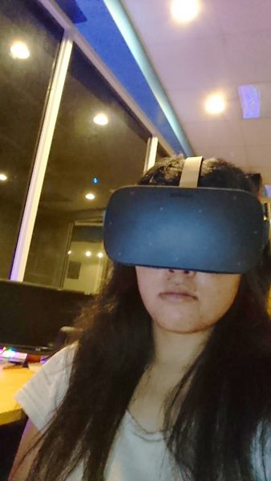

Bio
Renee Chia-Lei Chen is fulfilling a lifelong passion by becoming a video game artist. In 2011, she completed her Bachelor of Science degree in Multimedia and Game Science at Lunghwa University of Science and Technology in Taiwan. She continued to strive for excellence in design capabilities and technical expertise by pursuing graduate studies. She graduated from the Ohio State University in 2016 with a Master of Fine Arts in Digital Animation and Interactive Media.
Renee also studied social psychology, gender studies, and languages in addition to design and technical studies. She firmly believes that video games and animation tell a story about human experience in addition to providing entertainment. She has depth as a storytelling researcher and artist by combining her educational knowledge and wisdom from personal struggles into her work. She creates depth exploring all sides of an issue in order to clarify and seek resolution. She understands that people each have unique lives and unspoken tragedies. She strives to make video games entertaining also with action, black humor and heartbreak. Some of her own favorite games are We Heart Katamari, The Sims 3, World of Warcraft, Life is Strange, Project Zomboid, and Skyrim.
When Renee was in graduate school, she served as a Graduate Research Associate at Interface Lab in Ohio Supercomputer Center. She collaborated with many researchers and software engineers to produce virtual simulation for healthcare training. Under supervision she worked on UI, modeling, texturing, integration, and optimization. Renee is now ready to begin her career and offer her many talents. She currently resides in Columbus Ohio along with her dog Emma where she enjoys relaxing with friends and attending the pug meetup group.